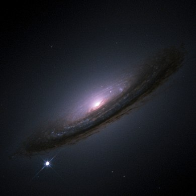
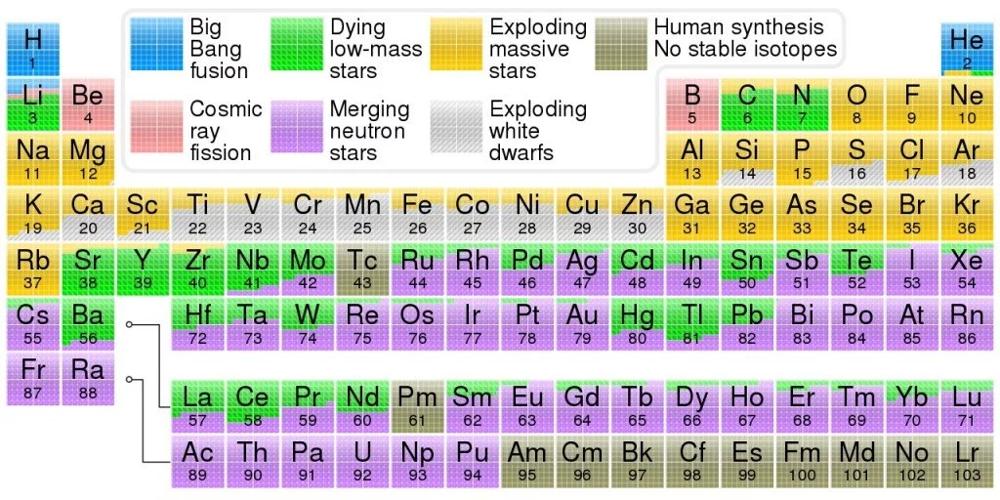
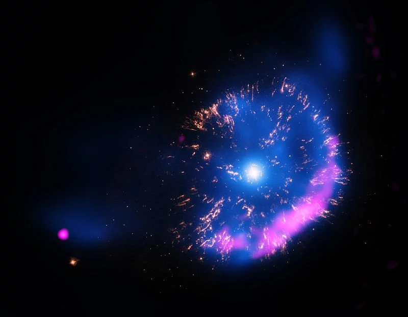
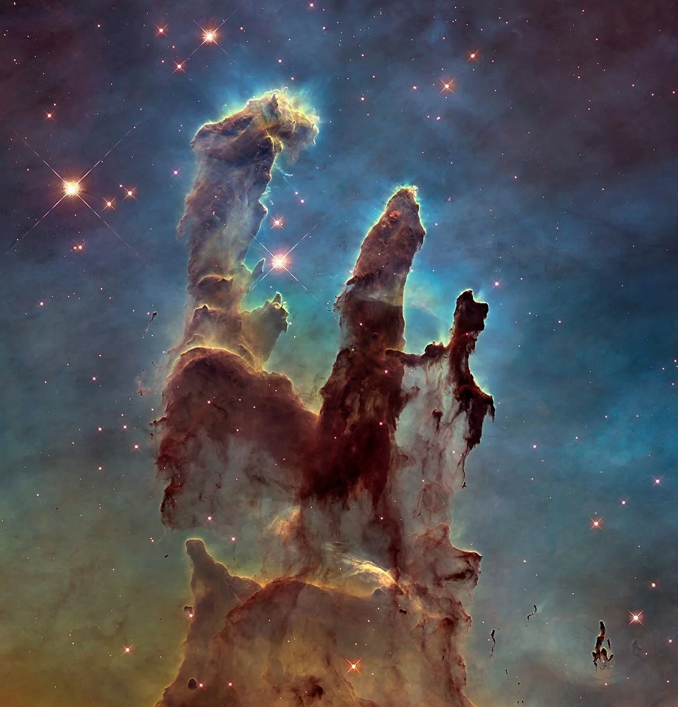

Supernovas podem ser mais brilhantes que uma galáxia inteira. Uma única supernova pode facilmente ofuscar uma galáxia inteira de estrelas em sua liberação de uma única explosão de energia. Em um curto período de tempo, pode gerar mais energia do que o nosso sol pode gerar em toda a sua vida útil de 10 bilhões de anos.
A maioria dos elementos conhecidos é feita em supernovas. Os processos nucleares dentro das estrelas, denominados nucleossíntese estelar, fundem o hidrogênio para criar outros elementos. Do hélio ao ferro, assim como alguns elementos maiores, todos são forjados no núcleo da estrela. No entanto, a formação dos elementos mais pesados requer algo exponencialmente mais quente, ainda mais energético do que o núcleo de uma estrela – aquelas forças tipicamente encontradas no instante de uma supernova!
Nem todas as supernovas são destruidoras de estrelas. Em alguns casos, as explosões estelares não acabam destruindo suas estrelas progenitoras: elas são conhecidas como impostores estelares. Eles não podem ser considerados verdadeiras supernovas, embora possam ser facilmente confundidos com um. Em vez disso, eles podem ser considerados uma nova especialmente poderosa , algo semelhante a uma supernova, que faz com que uma estrela libere uma quantidade significativamente maior de energia por um curto período.
Os criadores de remanescentes incrivelmente bonitos. O resultado de forças imensas e aparentemente destrutivas é muitas vezes bastante impressionante. Alguns dos mais magníficos objetos estelares existentes – o sonho de todo astrônomo de observar durante sua vida – foram criados por supernovas que ocorreram centenas e milhares de épocas atrás.
